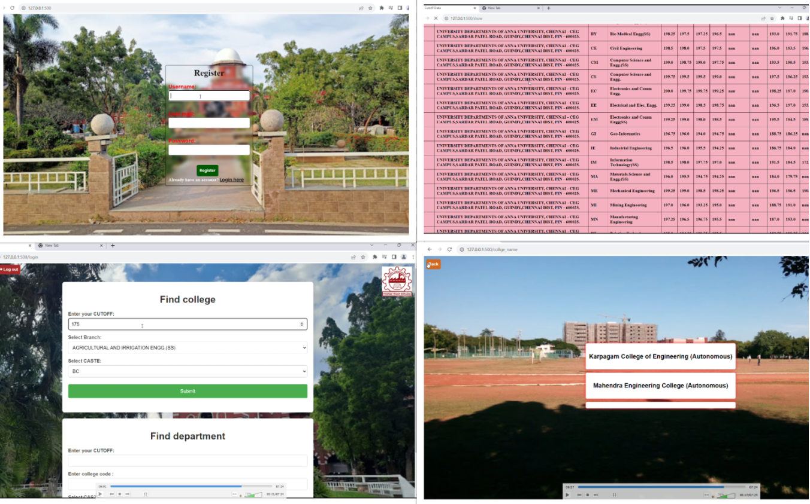

DEVELOPING A SUGGESTIVE MODEL THAT INTEGRATES COUNSELING MARKS TO ENHANCE EQUITY AND FAIRNESS IN STUDENT SELECTION
The Tamil Nadu Engineering Admissions (TNEA) counseling process represents a pivotal juncture for aspiring engineering students, determining their academic journey and future career prospects. However, the current system for selecting colleges within TNEA relies heavily on subjective guidance, limited information access, and manual processes, leading to suboptimal college choices. To address these challenges, this project proposes the development of a data-driven College Suggestion System for TNEA counseling. Primary objective of this system is to empower students and their families with a robust platform that offers personalized college recommendations based on individual 12th-grade cutoff scores, academic preferences, and career goals. By leveraging historical data on cutoff scores, admission trends, and other relevant factors, the system seeks to provide students with accurate and data-driven insights into their admission probabilities at various colleges. Key features of the proposed system include comprehensive and up-to-date information about participating colleges, streamlined data retrieval and analysis, and user-friendly interfaces for easy access. The system aims to minimize the likelihood of suboptimal college choices, improve transparency in the admissions process, and encourage data- driven decision-making among TNEA counseling participants. Through this project, we aspire to enhance the overall efficiency, fairness, and user experience of the college selection process within TNEA counseling. By aligning students with institutions that match their academic performance and aspirations, we aim to contribute to their long-term success and the advancement of the engineering education landscape in Tamil Nadu.